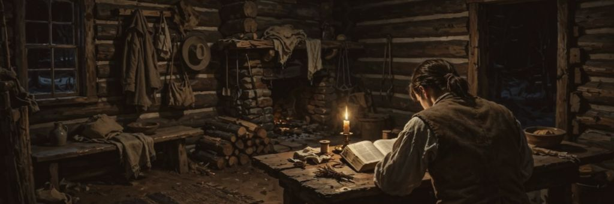
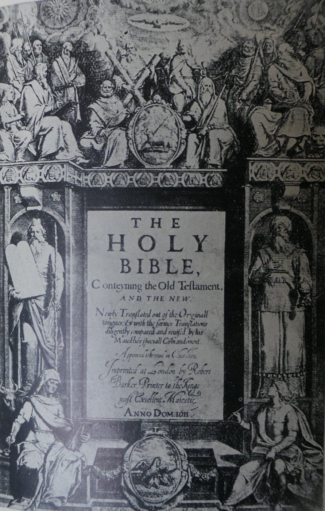
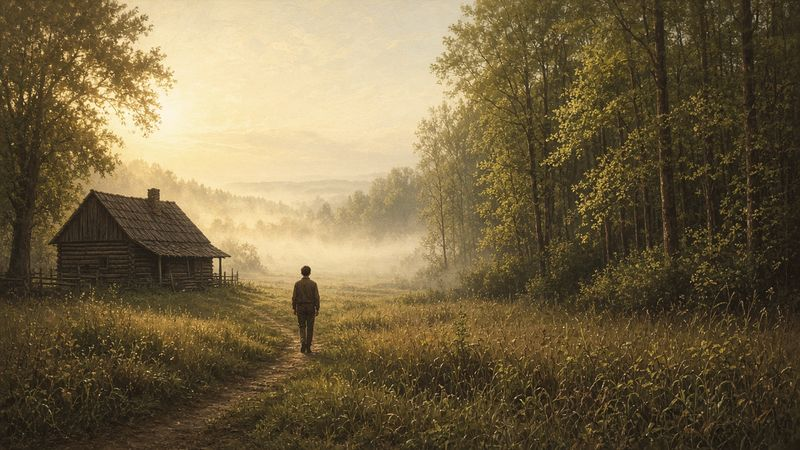
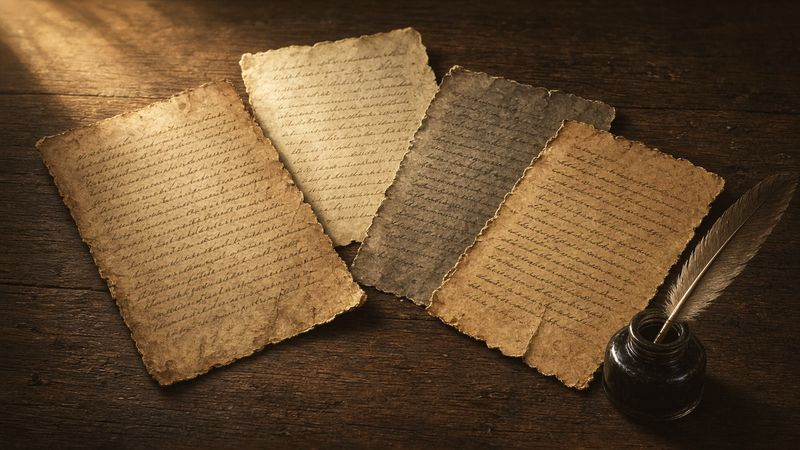

And the LORD came, and stood, and called as at other times, Samuel, Samuel. Then Samuel answered, Speak; for thy servant heareth.
1 Samuel 3:10
A Clear Spring Morning
It was, he remembered, “the morning of a beautiful, clear day, early in the spring of eighteen hundred and twenty.”1 A fourteen-year-old boy left the log house on his father’s farm in Manchester, New York, and walked toward the trees.
He was going there to pray out loud, something he had never done in his life. He was going because of one verse of scripture. And he was going alone.
A Verse in James
We glimpsed him in the first pages of this book, sitting with a Bible in that log house in the late winter or early spring of 1820, reading one verse again and again. He was Joseph Smith Jr., the limping farm boy of the last chapter. He was troubled about his sins and confused by the churches. His mother and three of his brothers and sisters had joined the Presbyterians; he leaned toward the Methodists; his father would join no one. Every preacher read the same Bible and came to a different answer. Then, Joseph remembered, “I was one day reading the Epistle of James, first chapter and fifth verse, which reads: If any of you lack wisdom, let him ask of God, that giveth to all men liberally, and upbraideth not; and it shall be given him.”2


Many people have read that verse without being stopped by it. Joseph was stopped.
Never did any passage of scripture come with more power to the heart of man than this did at this time to mine. It seemed to enter with great force into every feeling of my heart. I reflected on it again and again, knowing that if any person needed wisdom from God, I did; for how to act I did not know, and unless I could get more wisdom than I then had, I would never know.3
The problem, as he saw it, was that the Bible alone could not settle the question, because “the teachers of religion of the different sects understood the same passages of scripture so differently as to destroy all confidence in settling the question by an appeal to the Bible.”4 He would have to do what James said. He would have to ask God directly.
That was a bold thing for a boy to decide. He knew the stories of God speaking to Moses at the burning bush and to the boy Samuel in the night. But almost every preacher he had heard taught that such things belonged to Bible times. Joseph came to the conclusion that he “must either remain in darkness and confusion, or else I must do as James directs, that is, ask of God.” If God gave wisdom liberally and did not scold those who asked, he reasoned, “I might venture.”5
Into the Woods
“So, in accordance with this, my determination to ask of God, I retired to the woods to make the attempt.”6

The woods were on his father’s land, a stand of hardwood trees west of the log house. Years later, Joseph told a visiting newspaper writer that he went to a place where he had been clearing trees, and that he had left his axe there in a stump.7 Picture the morning: sunlight slanting through branches not yet in full leaf, the ground still damp from the thaw, the sound of a farm waking up somewhere behind him.† Joseph looked around to make sure he was alone. “It was the first time in my life that I had made such an attempt,” he said, “for amidst all my anxieties I had never as yet made the attempt to pray vocally.”8
By 1820 the Smiths had cleared about thirty acres. The rest of the farm was still forest, much of it old-growth hardwood, with trees as tall as a hundred feet and four to six feet thick at the base. Today Latter-day Saints call that stand of trees the Sacred Grove. No one knows the exact spot where Joseph knelt. It was somewhere in those woods, probably near the edge of the land the family was clearing.9
He knelt and began to pray. What happened next he described more than once, to different people, over the course of twenty years. Each time he tried to put it into words, the words seemed too small. This chapter lets those accounts speak side by side, the way the four Gospels tell the life of Jesus, each adding what the others leave out.
Thick Darkness
The first thing Joseph felt was not light but darkness.
In his 1838 history he wrote: “I had scarcely done so, when immediately I was seized upon by some power which entirely overcame me, and had such an astonishing influence over me as to bind my tongue so that I could not speak. Thick darkness gathered around me, and it seemed to me for a time as if I were doomed to sudden destruction.”10
In 1835, telling the story to a visitor in Kirtland, Ohio, he described the same struggle in a different way. “My toung seemed to be swolen in my mouth, so that I could not utter,” he said. “I heard a noise behind me like some person walking towards me, I strove again to pray, but could not, the noise of walking seemed to draw nearer, I sprung up on my feet, and looked around, but saw no person or thing that was calculated to produce the noise of walking.”11
He was sure it was not his imagination. In 1838 he insisted that he had felt himself in danger “not to an imaginary ruin, but to the power of some actual being from the unseen world, who had such marvelous power as I had never before felt in any being.”12
He called on God with all his strength, “at the very moment when I was ready to sink into despair.” He did not give up. He kept praying.
“Above the Brightness of the Sun”
Then the light came.
Just at this moment of great alarm, I saw a pillar of light exactly over my head, above the brightness of the sun, which descended gradually until it fell upon me. It no sooner appeared than I found myself delivered from the enemy which held me bound. When the light rested upon me I saw two Personages, whose brightness and glory defy all description, standing above me in the air. One of them spake unto me, calling me by name and said, pointing to the other—This is My Beloved Son. Hear Him!13
That is the account most Latter-day Saints know, from the history Joseph began in 1838 and published in 1842. But the earliest account is in his own handwriting, written in 1832, when he was twenty-six. His spelling was rough and his sentences ran on, but he wrote with feeling:
I cried unto the Lord for mercy for there was none else to whom I could go and obtain mercy and the Lord heard my cry in the wilderness and while in the attitude of calling upon the Lord in the 16th year of my age a piller of light above the brightness of the sun at noon day come down from above and rested upon me and I was filled with the spirit of god and the Lord opened the heavens upon me and I saw the Lord and he spake unto me saying Joseph my son thy sins are forgiven thee.14
In the 1835 telling, the light was “a pillar of fire,” which “rested down upon me, and filled me with joy unspeakable.” He said, “a personage appeard in the midst, of this pillar of flame which was spread all around, and yet nothing consumed.” Then “another personage soon appeard like unto the first,” who “said unto me thy sins are forgiven thee.” Joseph added a detail found in no other account: “I saw many angels in this vision.”15
Readers who know the Hebrew Bible may hear an echo in that phrase “and yet nothing consumed.” When the Lord appeared to Moses at Horeb, “the bush burned with fire, and the bush was not consumed.”16
In 1842, writing for a newspaper editor who knew nothing about the Latter-day Saints, Joseph summed it up in a single sentence. He was “enwrapped in a heavenly vision and saw two glorious personages who exactly resembled each other in features, and likeness, surrounded with a brilliant light which eclipsed the sun at noon-day.”17
“Join None of Them”
Joseph had come with one question. As soon as he could speak, he asked it. “My object in going to inquire of the Lord was to know which of all the sects was right, that I might know which to join.” He added, “at this time it had never entered into my heart that all were wrong.”18
The answer surprised him. “I was answered that I must join none of them.” The Lord, quoting the prophet Isaiah and the apostle Paul, said that people “draw near to me with their lips, but their hearts are far from me,” that they taught “for doctrines the commandments of men, having a form of godliness, but they deny the power thereof.”19 In the 1842 account Joseph put it this way: he was told “that all religious denominations were believing in incorrect doctrines, and that none of them was acknowledged of God as his church and kingdom.” He was “expressly commanded to ‘go not after them,’” and he received “a promise that the fulness of the gospel should at some future time be made known unto me.”20
Those are strong words, and Christians of other traditions sometimes hear them as an insult. It helps to notice what they do and do not say. They are aimed at creeds and at a form of godliness without power, not at the sincerity or goodness of believers. Joseph’s mother and brothers were faithful Presbyterians, and he loved them. Throughout his life he counted Methodists, Baptists and others among his friends, and he later wrote that his people claimed the right to worship God according to conscience and allowed “all men the same privilege.”21 The message of the vision was not that other Christians were bad. It was that something had been lost, and that God was about to restore it.
The 1832 account remembers the vision not chiefly as an answer about churches but as an experience of forgiveness and love. “My soul was filled with love,” Joseph wrote, “and for many days I could rejoice with great Joy and the Lord was with me.”22
“When I came to myself again,” he said in 1838, “I found myself lying on my back, looking up into heaven.” The light had gone. He had no strength. After a while he got up and walked home.23
Four Accounts, One Witness
Joseph Smith wrote or dictated four accounts of the First Vision during his lifetime: in 1832, 1835, 1838 and 1842. At least five other people who heard him tell it wrote down what they remembered.24 The accounts are not identical. In 1832 he writes of “the Lord”; in the later accounts he names two personages, the Father introducing the Son. The 1835 account alone mentions angels. The 1832 account emphasizes his sins and forgiveness; the 1838 account emphasizes his question about the churches. He gives his age as “in the 16th year,” “about 14,” and “in my fifteenth year.”

Some critics have argued that these differences show the story grew over time. The Church’s own essay on the accounts takes that question seriously. It points out that “the various accounts of the First Vision tell a consistent story, though naturally they differ in emphasis and detail.” It notes that the New Testament gives three accounts of Paul’s vision on the road to Damascus, and they differ too. And it suggests that the 1832 account, which speaks of “the Lord” opening the heavens and then of seeing “the Lord,” can reasonably be read as describing two beings.25
There is also the matter of how hard it was for Joseph to write. In 1832, the same year as his first account, he told a friend that he felt imprisoned by “paper pen and Ink and a crooked broken scattered and imperfect Language,” and called the written word a “little narrow prison.”26 His later accounts were dictated to scribes. They flow more easily, and they say more.
Every one of them, though, comes back to the same few things. What all the accounts share is more striking than how they differ. A boy, troubled about his soul and confused by religious argument, went to the woods to pray. He felt an opposing power. A light brighter than the sun came down on him. He saw heavenly beings who spoke to him, told him his sins were forgiven, and told him not to join any of the churches. He came away changed. Whatever else a reader decides about it, the boy who walked out of those woods was not the boy who walked in.
Historians cannot prove or disprove a vision. As the Church’s essay says, “neither the truth of the First Vision nor the arguments against it can be proven by historical research alone.” What historians can do is set out the record honestly. And the record shows a man who told the same essential story, in his own words and through others, for more than twenty years, at great cost to himself.
A Story Kept Close
For most of the next decade, Joseph said little about the vision outside his family. After the Methodist preacher’s scorn and the neighbors’ ridicule, he seems to have learned to keep it to himself. The first written account would not come until 1832, twelve years later. The account most people know was not published until 1842.27
Even his mother, when she came to write her history in 1845, did not tell the story in her own words. At the point where her son “arrived at the age of fourteen,” she simply copied out his published account from the Times and Seasons, saying that it would show “more clearly than I can express, the state of his feelings and the result of his reflections on this occasion.”28 She had told and retold many family stories. This one she left to him.
That restraint is itself a kind of evidence about how the family regarded it. They did not treat it as a tale to impress the neighbors. To Joseph it was sacred, and it was painful to share, because sharing it had brought him nothing but trouble. Historians who study memory point out that people often understand an early experience more fully as later events unfold, and tell it differently as a result. Joseph did not grasp everything about the vision in 1820. He understood more of it in 1838, after the Church had been organized and the priesthood restored, than he had at fourteen.29
What he never changed was the heart of it. Whether he was writing in his own hand at twenty-six, talking to a stranger in Kirtland at twenty-nine, dictating a formal history at thirty-two, or answering a Chicago editor at thirty-six, he said that he had prayed, that light had come, and that God had answered him.
“Why Persecute Me for Telling the Truth?”
He would pay for that story for the rest of his life. The cost began almost immediately.
“Some few days after I had this vision,” Joseph wrote, “I happened to be in company with one of the Methodist preachers, who was very active in the before mentioned religious excitement.” Joseph told him about the vision, expecting, perhaps, that a man of God would understand. “I was greatly surprised at his behavior; he treated my communication not only lightly, but with great contempt, saying it was all of the devil, that there were no such things as visions or revelations in these days; that all such things had ceased with the apostles, and that there would never be any more of them.”30
The preacher’s view was common in his day, and it was sincerely held. Many Protestants believed that revelation had ended with the Bible, and that anyone claiming new visions was deceived. To them, a farm boy’s story could only be dangerous.
Word spread, and Joseph found that his story “had excited a great deal of prejudice against me among professors of religion.” He was struck by how strange it was that “an obscure boy, of a little over fourteen years of age, and one, too, who was doomed to the necessity of obtaining a scanty maintenance by his daily labor, should be thought a character of sufficient importance to attract the attention of the great ones of the most popular sects of the day.”31
Lucy recorded a frightening incident from about this time. When Joseph was fourteen, coming home one evening across the dooryard, someone fired a gun across his path. Joseph sprang into the house, unhurt. The next morning the family found the shooter’s tracks under a wagon, and the shot lodged in a cow. “The man, who attempted this murder, we have not as yet ascertained,” Lucy wrote twenty-five years later, “neither can we imagine the cause thereof.”32
Joseph found comfort in an ancient parallel. He remembered how the apostle Paul told King Agrippa of the light and the voice on the road to Damascus, and how few believed him. “But all this did not destroy the reality of his vision,” Joseph wrote. “So it was with me.”
I had actually seen a light, and in the midst of that light I saw two Personages, and they did in reality speak to me; and though I was hated and persecuted for saying that I had seen a vision, yet it was true; and while they were persecuting me, reviling me, and speaking all manner of evil against me falsely for so saying, I was led to say in my heart: Why persecute me for telling the truth? I have actually seen a vision; and who am I that I can withstand God, or why does the world think to make me deny what I have actually seen? For I had seen a vision; I knew it, and I knew that God knew it, and I could not deny it.33
The 1832 account is quieter but just as poignant. Joseph “could find none that would believe the hevnly vision,” he wrote, “nevertheless I pondered these things in my heart.”34 Those last words echo what Luke wrote of Mary, the mother of Jesus, after the shepherds came: she “kept all these things, and pondered them in her heart.”35
“I Have Learned for Myself”
Go back one last time to that spring morning in 1820, to the moment after the light had gone.
Joseph walked home weak and shaken. He came into the log house and leaned against the fireplace. His mother, busy with the work of a household of ten, looked at him and asked what was the matter.36
“Never mind, all is well—I am well enough off,” he told her. Then he said something more: “I have learned for myself that Presbyterianism is not true.”37
It was a boy’s answer, a little blunt, spoken to a mother who had just joined the Presbyterians. It was not the whole story, and he did not tell her the whole story then. But one phrase in it holds the meaning of this chapter: I have learned for myself.
His grandfather Solomon had learned late, in his seventies, that heaven could be reached by prayer. His grandfather Asael had told his children to search the scriptures and trust that God was just. His mother had made a covenant on what she thought was her deathbed and spent twenty years searching for a church. His father had dreamed of a dead and silent field. Now the youngest of them to ask had received an answer, and he had received it himself, by doing what a verse in James said to do.
“I had found the testimony of James to be true,” he wrote, “that a man who lacked wisdom might ask of God, and obtain, and not be upbraided.”38
Thousands of years earlier, a boy named Samuel had lain down in the temple at Shiloh and heard a voice call his name. In those days, the Bible says, “the word of the LORD was precious,” and “there was no open vision.”39 Samuel answered, “Speak; for thy servant heareth.” Latter-day Saints believe that in a grove of trees in western New York, the heavens opened again for another boy who was willing to listen.
He was told to wait. He was promised that the fulness of the gospel would be made known “at some future time.” For three years nothing more seemed to happen. Then, one September night, his room began to fill with light.
Key: † marks imagined connective detail. Full citations and verification status are in 05-sources.md. Joseph Smith—History in the Pearl of Great Price is the canonized text of the history Joseph began in 1838 (JSP, History, 1838–1856, vol. A-1), lightly edited; the 1832, 1835 and 1842 accounts are quoted from Joseph Smith Papers transcripts with original spelling.
Notes
-
Joseph Smith—History 1:14, https://www.churchofjesuschrist.org/study/scriptures/pgp/js-h/1. The walk from the house is implied in the account and in the David Nye White interview cited below; the rest of the paragraph introduces scenes documented later in this chapter. ↩
-
Joseph Smith—History 1:11, https://www.churchofjesuschrist.org/study/scriptures/pgp/js-h/1. James 1:5 (KJV). The season is from JS-H 1:14 (“early in the spring of eighteen hundred and twenty”). ↩
-
Joseph Smith—History 1:12. ↩
-
Joseph Smith—History 1:12. ↩
-
Joseph Smith—History 1:13. ↩
-
Joseph Smith—History 1:14. ↩
-
Interview by David Nye White, Aug. 21, 1843, published in the Pittsburgh Weekly Gazette, Sept. 15, 1843, as summarized in Saints, vol. 1, ch. 2, https://www.churchofjesuschrist.org/study/history/saints-v1/02-hear-him, and its note 1. We paraphrase; the White interview is a secondhand account. ↩
-
Joseph Smith—History 1:14. † The light, the damp ground and the farm sounds are imagined. The clear spring morning, the woods, his looking around to be alone and his first vocal prayer are documented (JS-H 1:14–15). ↩
-
Church History Topics, “Sacred Grove and Smith Family Farm,” https://www.churchofjesuschrist.org/study/history/topics/sacred-grove-and-smith-family-farm. ↩
-
Joseph Smith—History 1:15. ↩
-
Joseph Smith, Journal, Nov. 9–11, 1835, 23–24, JSP, https://www.josephsmithpapers.org/paper-summary/journal-1835-1836/25. Recorded by his scribe Warren Parrish as Joseph told the story to a visitor, Robert Matthews. ↩
-
Joseph Smith—History 1:16. ↩
-
Joseph Smith—History 1:16–17. ↩
-
Joseph Smith, History, circa Summer 1832, 3, JSP, https://www.josephsmithpapers.org/paper-summary/history-circa-summer-1832/3. In Joseph’s own handwriting. Original spelling retained. ↩
-
JS, Journal, Nov. 9–11, 1835, 24, JSP, https://www.josephsmithpapers.org/paper-summary/journal-1835-1836/25. ↩
-
Exodus 3:2 (KJV). ↩
-
Joseph Smith, “Church History,” Times and Seasons 3 (Mar. 1, 1842): 706–7, JSP, https://www.josephsmithpapers.org/paper-summary/church-history-1-march-1842/1. This is the “Wentworth letter.” ↩
-
Joseph Smith—History 1:18. ↩
-
Joseph Smith—History 1:19. The phrases echo Isaiah 29:13, Matthew 15:8–9 and 2 Timothy 3:5 (KJV). ↩
-
JS, “Church History,” Times and Seasons, Mar. 1, 1842, 707, JSP, https://www.josephsmithpapers.org/paper-summary/church-history-1-march-1842/2. ↩
-
JS, “Church History,” Times and Seasons, Mar. 1, 1842, 710 (the eleventh Article of Faith), JSP. See Ch. 11. The statement that Joseph counted members of other churches among his friends is the author’s summary; see Bushman, Rough Stone Rolling, chs. 2, 22. ↩
-
JS, History, circa Summer 1832, 3. ↩
-
Joseph Smith—History 1:20. ↩
-
Gospel Topics Essays, “First Vision Accounts,” https://www.churchofjesuschrist.org/study/manual/gospel-topics-essays/first-vision-accounts; JSP, “Primary Accounts of Joseph Smith’s First Vision of Deity,” josephsmithpapers.org. ↩
-
“First Vision Accounts.” The three New Testament accounts of Paul’s vision are Acts 9, 22 and 26. ↩
-
Joseph Smith to William W. Phelps, Nov. 27, 1832, as quoted in “First Vision Accounts.” ↩
-
Saints, vol. 1, ch. 2; Gospel Topics Essays, “First Vision Accounts.” ↩
-
Lucy Mack Smith, History, 1845, 71–73, JSP, https://www.josephsmithpapers.org/paper-summary/lucy-mack-smith-history-1845/80. Lucy’s fair copy introduces the extract from Joseph’s history in the Times and Seasons (1842). ↩
-
Steven C. Harper, First Vision: Memory and Mormon Origins (Oxford University Press, 2019). This paragraph summarizes Harper’s general argument; it does not quote him. ↩
-
Joseph Smith—History 1:21. ↩
-
Joseph Smith—History 1:22–23. ↩
-
Lucy Mack Smith, History, 1845, 72, JSP, https://www.josephsmithpapers.org/paper-summary/lucy-mack-smith-history-1845/79. Lucy dates it only to Joseph’s fourteenth year and does not connect it to the vision. ↩
-
Joseph Smith—History 1:24–25. ↩
-
JS, History, circa Summer 1832, 3. ↩
-
Luke 2:19 (KJV). ↩
-
Joseph Smith—History 1:20; JS, History, 1838–1856, vol. A-1, addenda, Note B, 132, JSP, https://www.josephsmithpapers.org/paper-summary/history-1838-1856-volume-a-1-23-december-1805-30-august-1834/138. In spring 1820 the household numbered ten: Joseph Sr., Lucy and eight children (Lucy, the youngest, was born in 1821). “Busy with the work” is the author’s inference. ↩
-
Joseph Smith—History 1:20. The manuscript Note B reads “never mind all is well— I am well enough— off” and “Presbyterianism is not True.” ↩
-
Joseph Smith—History 1:26. ↩
-
1 Samuel 3:1, 10 (KJV). ↩